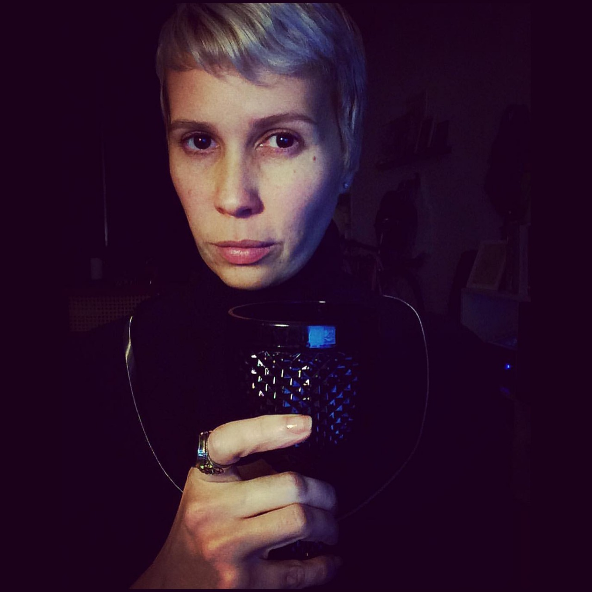
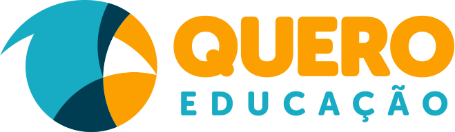

10/08/2019
20:00h
3ª edição
PÓS FRONT IN VALE
100% GRÁTIS
@ Quero Educação
Av. São João, 1701Q
São José dos Campos - SP
RODADA DE
15 MINUTOS
APENAS
HTML E CSS
SEM PREVIEW
SEM PHOTOSHOP
QUEM SERÁ O
VENCEDOR?
COMO FUNCIONA?
O Code in the Dark funciona assim: Você recebe um layout e tem 15 minutos para reproduzi-lo com HTML e CSS, complicado né?
Mas temos mais alguns pequenos detalhes: Você não pode usar qualquer programa de edição e conta apenas com uma imagem do layout. Além disso, sem previews! Só vai poder ver como ficou no fim da rodada. Animal né?
São 04 rodadas com 04 competidores em cada, o vencedor de cada rodada disputa a grande final!
INSCRIÇÕES
O evento é 100% grátis, mas temos limitações de espaço. As vagas serão exclusivas para os participantes do Front In Vale 2019 e a entrada será permitida até atingir o limite máximo do espaço.
Apresentação:
ALDA ROCHA
PATROCÍNIO
Quer saber mais? Entre em contato com a gente
contato@frontinvale.com.br